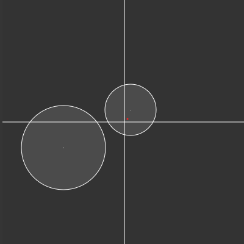
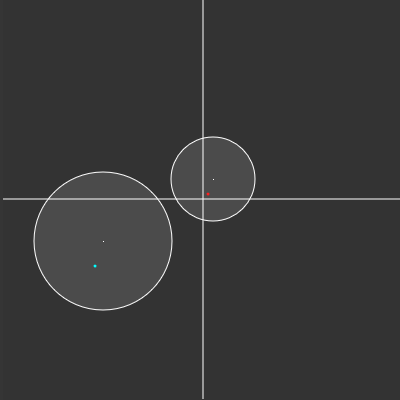

2D Vector Mapping
Points: 7 kyu
Kata ID: 5da995d583326300293ce4cb
Introduction
Imagine a function that maps a number from a given range, to another, desired one. If this is too vague - let me explain a little bit further: let's take an arbitrary number - 2 for instance - and map it with this function from range 0-5 to, let's say - 10-20. Our number lies in 2/5 of the way in it's original range, so in order to map it to the desired one we need to find a number that lies exactly in the same place, but in our new range. This number, in this case, is 14. You can visualize this as taking a 5cm piece of rubber, putting it next to the ruler, marking the dot on the second centimeter, then stretching the rubber between 10th and 20th centimeter and reading the value next to the dot.
Task
The task in this kata is, unfortunately, a little bit more complex. We will take the same idea, but apply it to the 2-dimensional plane, so instead of single numbers, we will consider vectors with their x-position and y-position, instead of ranges, we will look at the circles with given centers and radii.
You need to write a function called map_vector (or mapVector) that takes 3 arguments - vector, circle1, circle2 and returns a tuple/array/slice of x, y positions of the mapped vector. All three arguments will be tuples (arrays), the first one with x, y positions of a base vector, the second and third with x, y positions of the center of a circle and it's radius. The base vector will always be within the first circle and you need to map it from the first circle to the second. The coordinates should be precise up to second decimal place.
Examples
Let's take a look at a simple example:
vector = 5, 5
circle1 = 10, 20, 42
circle2 = -100, -42, 69
As we see, the vector's cartesian coordinates are x=5, y=5, first's circle's center is in x=10, y=20, it's radius is 42, and so on. Let's visualize it:

The red dot is our given vector. After running our function we should get our new, mapped vector with coordinates x=-108.21, y=-66.64. Take a look at the light-blue dot here:

So, to represent this with code:
map_vector((5, 5), (10, 20, 42), (-100, -42, 69)) == (-108.21, -66.64)
Two, very important things to notice here are:
- The distance between a vector and a circle's center is scaled accordingly to the second circle's radius
- The angle between the vector and the line x=c1.x is preserved (c1.x == first circle's center's x position)
It is also worth to mention, that when both circles' radii are equal, this is equivalent of just translating the vector by the distance between them, and when the circles are concentric this is roughly equivalent to the mapping function mentioned in the introduction.
Notes
Although it is not really a problem, but for simplicity the given vector will always be contained within the first circle. The plane in random tests is a square with sides ranging between -400 to 400.
Tip
It may not be necessary, but if you're stuck, think about the most iconic animal that pops to mind when thinking about the negative influence of the climate changes on our planet's habitat.
Enjoy, and don't hesitate to comment on any mistakes or problems with this kata.